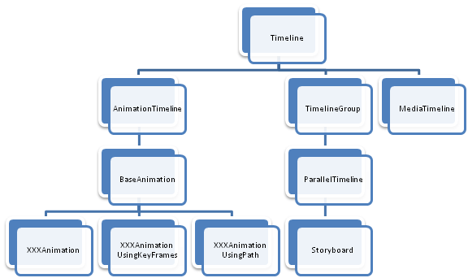

Timeline hierarchy
Timeline
http://msdn.microsoft.com/en-us/library/system.windows.media.animation.timeline.aspx
This is the base class for animation objects. It describes the majority of the properties that controls the direction, speed and duration of a single animation. It is important to understand the implication of these properties.
| Methods | ||
|---|---|---|
| Name | Sup | Comments |
| CreateClock | Yes | |
| Dependency Properties | |||
|---|---|---|---|
| Name | Att | Sup | Comments |
| AccelerationRatioProperty | No | Yes | |
| AutoReverseProperty | No | Yes | |
| BeginTimeProperty | No | Yes | |
| DecelerationRatioProperty | No | Yes | |
| DesiredFrameRateProperty | Yes | No | |
| DurationProperty | No | Yes | |
| FillBehaviorProperty | No | Yes | |
| NameProperty | No | No | |
| RepeatBehaviorProperty | No | Yes | |
| SpeedRatioProperty | No | Yes | |
| Events | ||
|---|---|---|
| Name | Sup | Comments |
| Completed | No | |
| CurrentGlobalSpeedInvalidated | No | |
| CurrentStateInvalidated | No | |
| CurrentTimeInvalidated | No | |
| RemoveRequested | No | |
Members
- Duration: is the time duration of one iteration of the animation. Generally, it is expressed in the TimeSpan form (for example, "0:1:2.4", where 0 is days, 1 hours, 2 minutes, 3 seconds and 4 milliseconds). The duration can also be Forever, Automatic (the duration it's defined by the timeline children if any, or by the returning value of NaturalDuration) or even null, telling that the animation will never start.
- SpeedRatio: indicates the relative speed of the the clock time related to its parent time (or real time, if it has no parent). For example, a speed of "2" makes the clock runs twice as fast, so an animation with a duration of 10 seconds, will consume in 5 real seconds.
- BeginTime: it's a TimeSpan indicating some time that must consume before the animation starts. The BeginTime is not affected by the local speedratio of the timeline.
- Autoreverse: when true, the animation plays forward and when it's completed it plays backward, taking the same amount of time to complete. The BeginTime is ignored when running backwards, so a Timeline with a begintime of 1 second, a duration of 10 seconds and a speedratio 2, will take 11 seconds to complete (1 + 5 + 5).
- RepeatBehavior: tells how many times the animation has to be executed, or during how many time. If its repeating times, for example an animation of 5 seconds with autoreverse and a repeact behavior of 1.5x will last 15s (5 forward, 5 backward and 5 forward). The same can be obtained if a timespan of 15 seconds is passed as RepeatBehavior.
- Acceleration/DecelerationRatio: modifies slightly the linear interpolation of time to have an effect of spring in the start and end of the iteration time. More control on the animation can be done using one of the Easing functions that will be commented later.
- FillBehavior: normally, when an animation ends, the final value is maintained in the target property (HoldEnd). The animated value can be removed at the end of the animation passing a Stop value here.
So in practice, the formula to calculate the total duration of a timeline should be (in case that RepeatBehavior sets the number of repetitions)
or (in case that RepeatBehavior sets the repetition time)
Methods
- CreateClock: Creates a new clock to control the timeline. This method call internally AllocateClock, which is reimplemented in the inheritors of Timeline to create the adecuate clock
For more detail about the classes deriving from AnimationTimeline, see Single Timelines
For deriving classes from TimelineGroup, see Group Timelines
The MediaTimeline is not implemented yet.